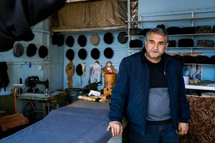
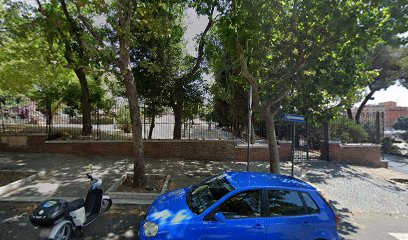
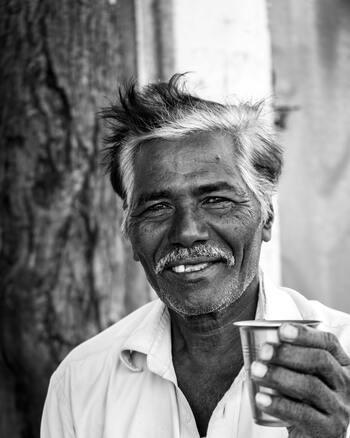
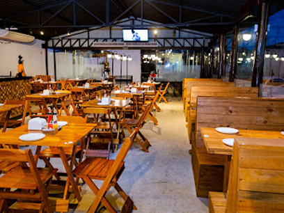
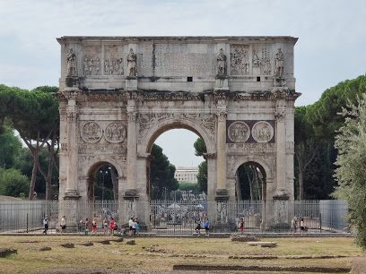
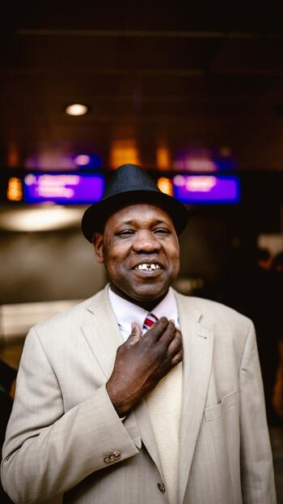
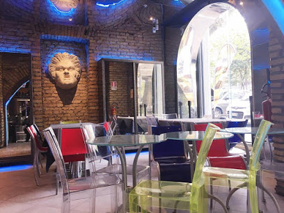
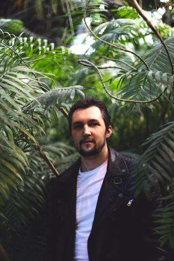
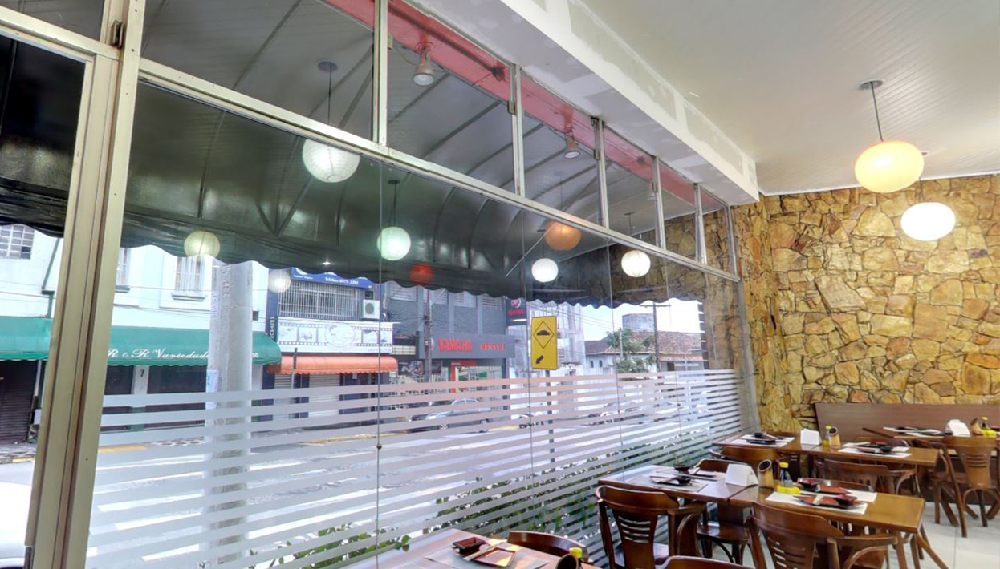
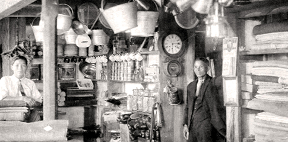

Via delle Terme di Titoi
Roma | Lácio - Itália | 21/04/21 - 16:05


Ordernar por
Coliseum
Milena Bellucci
24/03/19 - 10:06 | 158 Favoritos
24/03/19
10:06
#Italy
#Trip

Templo de Vénus e Roma
Marco Fiorentini
02/12/15 - 11:26 | 101 Favoritos
02/12/15
11:26
#Rome
#Love

Drinking water fountain
Neera Siciliani
21/04/21 - 19:06 | 58 Favoritos
21/04/21
19:06
#Drink
#Water


Caffè dello Studente
Basilio Conti
18/09/20 - 14:32 | 329 Favoritos
18/09/20
14:32
#Coffee
#Food

Meta Sudans
Aurelia Trevisani
05/01/18 - 11:31 | 238 Favoritos
05/01/18
11:31
#Trip
#History


Oppío Cafe
Breno Russo
25/02/20 - 13:01 | 88 Favoritos
25/02/20
13:01
#Coffee
#Food

Coffee Break
Manuela Giordano
08/08/19 - 08:56 | 478 Favoritos
08/08/19
08:56
#Coffee
#Break


Good Vibes Day - Bar Del Mose
Eduardo Siciliani
25/09/21 - 15:09 | 198 Favoritos
25/09/21
15:09
#Bar
#Italy

Royal Art Café
Deodata Fanucci
03/04/20 - 10:45 | 358 Favoritos
03/04/20
10:45
#Coffee
#Art


Passione vs. Diavolo
Celio Sagese
25/01/21 - 11:08 | 256 Favoritos
25/01/21
11:08
#Art
#Italy